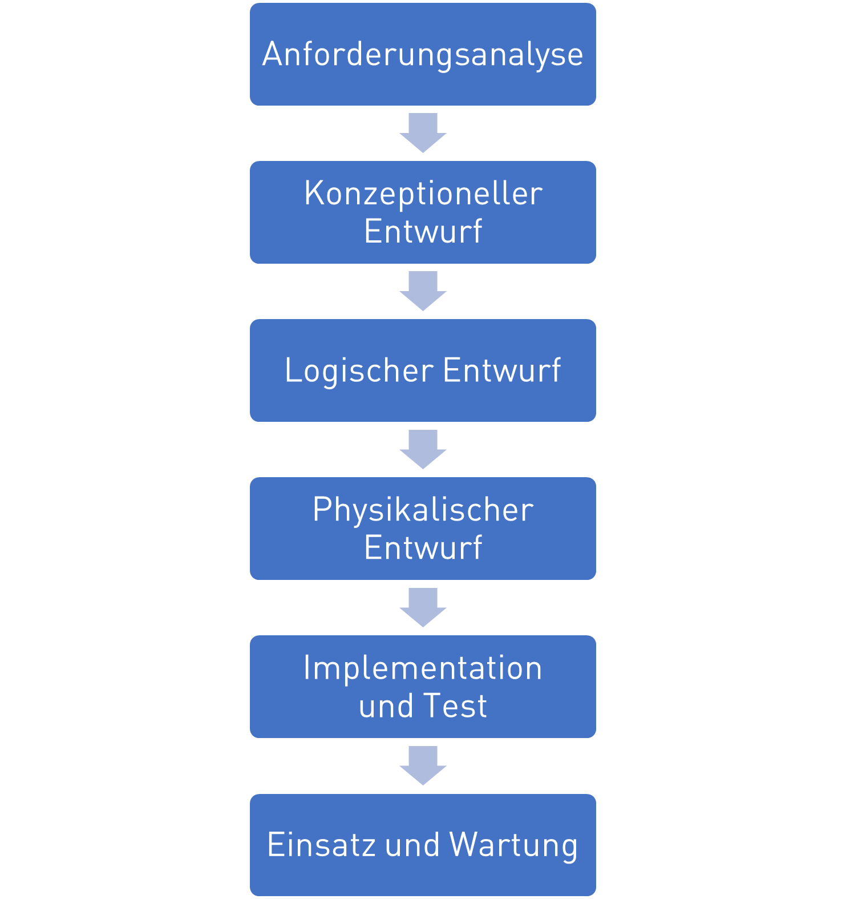

Entwurf relationaler Datenbanken#

Simple things should be simple. Complex things should be possible.
Alan Kay
Folien#
Entwurfsvorgehen#
Das klassische Entwurfsvorgehen von Datenbanken ähnelt dem Wasserfallmodell beim Softwareentwurf. Hierbei werden zuerst die Anforderungen und Anwendungsfälle
Anforderungsanalyse: Welche Anforderungen und Anwendungsfälle stellen sich an die DB?
Konzeptioneller Entwurf: Grobentwurf in dem im ER-Diagram die benötigten Entitäten, Attribute und Relationen abgebildet werden
Logischer Entwurf: Detailentwurf des konkreten Datenbankschematas für eine spezielles DBMS das die wirklichen Tabellen in der DB abbildet und normalisiert wird
Physikalischer Entwurf: Finale Festlegungen von Primärindexen und zusätzlicher Suchindexe zur Zugriffsoptimierung
Implementation und Test: Erstellung der Datenbank mit SQL
Einsatz und Wartung: Verwendung der Datenbank
Entscheidend in dem Vorgehen ist, dass es mit dem Konzeptioneller Entwurf einen Grobentwurf gibt, in der die funktional notwendigen Entitäten entworfen werden und einen nachfolgenden Detailentwurf mit dem Logischen und Physikalischen Entwurf, in dem die eigentlichen Tabellen in einem DBMS abgeleitet werden, welche sich meist unterscheiden, wie nachfolgend dargestellt.

ER-Diagramme#
Zur Darstellung der Entwürfe von Datenbanken nutzt man Entity-Relationship Diagramme. In ihnen visualisiert man die Entitäten mit Ihnen Attributen und die Relationen zwischen den Entitäten. Es gibt verschiedene varianten von ER-Diagrammen, wie in der folgenden Abbildung dargestellt. Gemein ist allen, dass sie Entitäten, Attribute (hier nicht dargestellt) und Relationen mit Kardinalitäten darstellen. Sie unterscheiden sich primär in der Notation, als im Gebrauch von Symbolen.

Wir benutzen im Folgenden die UML-Notation, welche auf UML-Klassendiagrammen basiert.
Klassen erhalten die Anmerkung <<Entity>> um sie von normalen Klassen abzugrenzen
Attribute (Tabellenspalten) werden als Klassenattribute mit ihrem Datentyp dargestellt
Primärschlüssel werden mit PK gekennzeichnet
Relationship-Attribute (Fremdschlüssel) werden mit Assoziationen modelliert
Die Leserichtung von Relationstypen wird mit
<<oder>>angegebenZahlen an Relationships geben die Kardinalität an
Ein wichtiger Unterschied zu UML-Diagrammen ist, dass es in ER-Diagrammen keine Methoden, Vererbung, Polymorphismus, Kapzelung, Klassenhierarchien gibt. Wir wenden also entsprechende Symbole nicht an.
Ein einfaches Beispiel stellt das folgende Bild dar. Wir haben eine Person, die in einem Ort wohnt. Die Person hat die Attribute Ausweisnummer und einen Namen. Wir nutzen die Ausweisnummer als Primärschlüssel, da sie eindeutig ist. Der Ort hat eine Postleitzahl und einen Namen. Die Postleitzahl dient hier als Primärschlüssel der einfachheit halber (Da eine Postleitzahl viele Gemeinden umfassen kann oder ein Ort mehrere Postleitzahlen haben kann ist dies nicht ideal). Als Relation kennzeichnen wir hier, dass eine Person in genau einem Ort wohnt. Zu beachten ist hier die Leserichtung >> und die Kardinalitäten 1 zu 1 die am Anfang und Ende der Relation stehen.
Kardinalitäten#
In ER-Diagrammen spielt dabei insbesondere die Kardinalität von Relationen eine wichtige Rolle, da sich daraus unterschiedliche Tabellendarstellungen ableiten. Die Kardinalitäten beschreiben die Anzahl an minimalen und maximalen möglichen Beziehungen zwischen Entitäten für diese Beziehung. Grundsätzlich unterscheidet man die folgenden Kardinalitäten:
| Kardinalität | Beispiel | ER-Diagramm |
| 1 zu 1 | Eine Person ist geboren in minimal einem, maximal einem Ort. | |
| 1 zu 0..1 | Eine Person ist gestorben in minimal Null, maximal einem Ort. | |
| 1 zu 0..* | Eine Person macht Ferien in minimal Null, maximal vielen Orten. | |
| 1 zu 1..* | Eine Person war bereits in minimal einem, maximal vielen Orten. |
Es ist dabei zu beachten, dass die Leserichtung (<< oder >>) wichtig ist, da keine Aussage über die Kardinalität der Gegenrichtung gemacht wird! Es wird in dem obigen Beispiel also nur eine Aussage gemacht, in wie vielen Orten eine Person war und nicht darüber wie viele Personen in Orten sein können.
Beispiel: ER Konzeptentwurf für Geometrieobjekte#
Als Entwurfsbeispiel greifen wir auf die im Kapitel Objektorientierung behandelten Beispiel der Geometrieobjekte. Wir haben die Klassen Point, Line und Polygon mit den Varianten Triangle, Tetragon und Pentagon.
Der Point hat als Attribute die x und y Koordinaten vom Datentyp float, welche beide als public gekapselt sind, da mit + annotiert. Ferner gibt es unterschiedliche Methoden in Point, Line und Polygon zur Berechnung der Distanz, Fläche und Länge der jeweiligen Objekte.
Im UML Diagramm haben wir dargestellt, dass ein Polygon die Aggregations-Assoziation mit der Multiplizität 1 zu 3..* zur Klasse Point hat, also ein Polygon mit mindestens drei Punkten verknüpft ist. Die Line ist wiederum assoziiert mit dem Punkt Point mit der Multiplizität 1 zu 2, also sind einer Linie genau zwei Punkte zugeordnet.
Die Klassen Triangle, Tetragon und Pentagon sind Unterklassen von Polygon, welche keine weitere Funktionalität hinzufügen.
Um für diese Objekte ein Datenbankschema zu entwerfen, führen wir sie in ein ER-Diagram über, indem wir die oben dargestellten Konvertierungsregeln anwenden.
Wir annotieren die Klassen als erstes mit
<<Entity>>, um sie als solches zu kennzeichnen.Wir entfernen alle Methoden, da ER-Diagramme sie nicht unterstützen.
Wir entfernen alle Kapselungsannotationen
+,-oder#vor AttributenWir fügen Primärschlüssel zu allen Entitäten hinzu
Wir wandeln die Speziellen Assoziationstypen Aggregation und Composition in einfache Assoziationen um
Da es in ER-Diagrammen und DBMS keine Vererbung gibt, müssen wir uns überlegen wie wir mit den Unterklassen Triangle, Tetragon und Pentagon verfahren. Eine Möglichkeit wäre es für jede eine neue Entität einzuführen, die genauso wie ein Polygon aufgebaut ist. Das führt aber zu mehreren redundant aufgebauten Tabellen. Dies ist notwendig wenn die Unterklassen eigene Attribute einführen würden. Da sie das allerdings nicht tun, brauchen wir auch auch keine separaten Entitäten, sondern können Sie in der generischen Entität Polygon mit aufnehmen, indem wir das Attribut PolygonType einführen, in dem wir speichern können, ob es sich um ein Triangle, Tetragon, Pentagon oder Untertyp handelt.
Wir erhalten den folgenden Konzeptentwurf:
In dem Konzeptentwurf gibt es drei Entitätstypen. Die Entität Point besitzt weiterhin x und y-Koordinate als die Attribute vom Datentyp float. Die Entität Line besitzt zwei Relationen zu Point für den Start-Punkt und End-Punkt. Die Entität Polygon hat die Relation mit der Kardinalität 1 zu 3..* zu Punkt, umfasst also mindestens drei Punkte. Sie hat auch ein neues Attribut PolygonType vom Datentyp str um den Untertyp zu speichern. Für alle drei Entitäten haben wir einen numerischen Primärschlüssel definiert, da numerische Indexe sind mit am effizientesten sind.
Normalisierung von Konzeptentwürfen zu Logischen Entwürfen#
Die Normalisierung ist ein wichtiger Schritt im Prozess der Abbildung eines Konzeptionellen Datenmodells auf ein Logisches und Physikalisches Datenmodell. Sie hat den Zweck, Redundanzen (mehrfaches Festhalten des gleichen Sachverhalts) zu minimieren, indem neue Tabellen erzeugt und durch neue Relationen verknüpft werden für
komplexe Attribute (Listen, Dictionaries)
Relationen mit hoher Kardinalität
Redundante Daten (z.B. Polygontyp)
Man unterscheidet dabei verschiedene Normalformen mit fortschreitend strengeren Bedingungen an das Datenbankschema:
1NF - 1. Normalform: Alle Attributwerte sind atomar - das heißt, dass jede Information innerhalb einer Tabelle eine eigene Tabellenspalte bekommt und zusammenhängende Informationen, wie zum Beispiel die Postleitzahl und der Ort, oder komplexe Attribute wie Listen oder Diktionaries nicht in einer Tabellenspalte gespeichert werden.
2NF - 2. Normalform: Nicht-Schlüssel Attribute sind von allen Primärschlüsseln voll funktional abhängig - das heißt, dass nur Informationen die funktional zusammen hängen in einer Entität gespeichert werden. Zum Beispiel wird zu einer Rechnung nicht direkt der Name des Kunden gespeichert, sondern diese gehören zu einer separaten Entität Kunde, da ein Kunde ja mehrere Rechnungen haben kann. Wenn man ein ER-Diagramms erstellt und über die Entitäten nachdenkt, so wendet man meist automatisch die 2. Normalform an.
3NF - 3. Normalform: Nicht-Schlüssel Attribute sind nur von Primärschlüssel abhängig - das heißt, dass redundante Attribute die zusammengehören zusammen abgespeichert werden. So treten Postleitszahlen und Ortsnahmen paarweise auf und sollten eine separate Entität bilden.
BCNF - Boyce-Codd-Normalform: Alle Attribute von denen Attribute abhängen sind Schlüssel - das heißt, dass wenn mehre Fremdschlüssel in einer Entität auftreten und diese voneinander abhängen, so wird diese Abhängigkeit auch wieder in eine Entität ausgelagert. Speichert man zum Beispiel Ortsnahmen und Postleitzahlen in separaten Entitäten (Weil sich ja Ortsnamen doppeln), so darf man nicht die Fremdschlüssel PLZ und Ortsname in der Kundenentität speichern, sondern braucht immer noch die Entität PLZ-Ortsname.
4NF - 4. Normalform: Es gibt nur noch triviale mehrwertige Abhängigkeiten - das heißt, dass wenn mehrwertig Attribute mit Fremdschlüssel oder anderen mehrwertigen Attributen auftreten, mit denen sie funktional nichts zu tun haben, so werden diese ausgelagert. Zum Beispiel ist es in der 4NF falsch bei einer Bestellung die Lieferanschrift, Kundennummer und die Artikelnummern in einer Tabelle zu speichern, da die Lieferanschrift mit der Kundennummer zusammenhängt, aber nicht mit den Artikelnummern. Korrekt sind zwei Tabellen mit Lieferanschrift und Kundennummer und eine mit Artikelnummer und Kundennummer.
5NF - 5. Normalform: Es gibt keine mehrwertigen Abhängigkeiten, die voneinander abhängig sind - das heißt das jeder Zusammenhang zwischen einem Attributen und Fremdschlüssel in eine eigene Tabelle ausgelagert wird.
Meistens sind nur die ersten drei Normalformen im Datenbankentwurf relevant. Höhere Normalformen resultieren in sehr vielen kleinteiligen Tabellen, die auch für einfache Anfragen immer durch Joints zusammengesetzt werden müssen, was die Benutzbarkeit drastisch einschränkt.
An unserem Geometrie-Beispiel wollen wir uns einige Beispiele anschauen, für eine Verletzung der 1. bis 3. Normalform.
Im dem folgenden ER-Diagramm verletzen wir die 1. Normalform, da wir ein komplexes Attribut List<Punkt> definieren, statt dieses als Relation aufzulösen.
Im zweiten ER-Diagramm verletzen wir die 2. Normalform verletzt, da wir die Koordinaten des Start- und End-Punktes direkt in der Linie speichern, obwohl diese Punkte darstellen und somit einen funktionalen Zusammenhang haben. Hier ist die Lösung diese in die Entität Punkt auszulagern und Relationen zu erzeugen.
Im letzten Beispiel speichern wir fehlerhaft das Attribut PolygonTyp in der Entität Punkt, obwohl sie zu der Entität Polygon gehört.
Normalisierung von Kardinalitäten#
Entsprechend der 1. Normalform müssen wir Kardinalitäten entsprechend ihrer Ordnung unterschiedlich abbilden. Dabei können einfache Kardinalitäten (0 oder 1) als Attribut gespeichert werden, wärend höhere Kardinalitäten >1 als Relation in einer neuen Entität abgebildet werden. Hierbei spielt es im Logischen und Physikalischen Entwurf eine Rolle ob ein Attribut beim speichern einer neuen Entität in der Datenbank nicht angegeben werden muss (Nullable) oder zwingend angeben werden muss (Not Null).
| Kardinalität | Beispiel | ER-Diagramm |
| 1 zu 1 | Die Relationen werden durch Fremdschlüssel in der Entität von der die Relation startet `>>` abgebildet. Der Fremdschlüssel ist `Not Null`, also ein Eintrag muss IMMER vorhanden sein. | |
| 1 zu 0..1 | Die Relation wird mit Fremdschlüssel in der Entität abgebildet. Der Fremdschlüssel ist `Nullable`, also ein Eintrag muss NICHT vorhanden sein. | |
| 1 zu 0..* | Die Relation wird als neue Entität mit Fremdschlüssels abgebildet. | |
| 1 zu 1..* | Die Relation wird als neue Entität mit Fremdschlüssels abgebildet. Mindestens ein Eintrag sollte vorhanden sein (Das ist eine Konsistenzregel, die sich in einer DBMS nicht erzwingen lässt (es gibt sonst ein Henne-Ei-Problem).). |
Beispiel Geometrie#
Um den oben erstellten Konzeptentwurf für die Geometrieobjekte in ein Logischen Entwurf zu überführen, müssen wir den Entwurf normalisieren. Schauen wir uns den Entwurf noch einmal an.
Wir haben die drei Entitäten Linie, Punkt und Polygon mit zwei 1:1-Relationen von Linie zu Punkt und einer 1:3..*-Relationen von Polygon zu Punkt.
Wenden wir zuerst die Regeln der 1NF an und lösen diese Relationen auf entsprechend der oben gennanten Tabelle, so können wir die zwei 1:1-Relationen von Linie zu Punkt durch Fremdschlüssel in der Entität Linie darstellen.
Die 1:3..*-Relationen von Polygon zu Punkt hingegen ist entsprechend der 1NF nicht direkt abbildbar, da wir eine Multiplizität größer 1 haben und wir müssen eine neue Entität einführen. Diese Entität (Tabelle) listet welche Polygone, welche Punkte benutzen. Die neue Entität enthät also die zwei Fremdschlüssel und einen neuen Primärschlüssel. Im Logischen Entwurf führen wir auch die Fremdschlüssel als Attribut mit auf, um diese Eindeutig mit darzustellen.
In diesem Entwurf ist die 2NF und 3NF ist breits erfüllt.
Allerdings haben wir viele Dopplungen (Redundanzen) bei dem Attribut PolygonTyp, welche ja nur die Werte Triangle, Tetragon und Pentagon annehmen kann, aber jedes mal als neuer String gespeichert werden muss. Gleichzeitig wollen wir ja auch, dass dieses Attribut nur diese Werte annimmt und nicht mit Kauderwelsch gefüllt wird. Deshalb ist es sinnvoll hier die Werte zu begrenzen und die Dopplung von Strings zu vermeiden indem wir eine neue Entität PolygonType einführen. Diese definiert die Grundtypen Triangle, Tetragon und Pentagon und weißt ihnen einen numerischen Primärschlüssel zu, den wir in der Entität Polygon als Fremdschlüssel referenzieren.
Zu guter letzt definieren wir noch für alle Attribute und Fremdschlüssel ob sie Nullable oder NotNull sind.
Wir erhalten den finalen Logischen Entwurf:
Wichtig zu erkennen in dem logischen Entwurf ist, dass wir jetzt nur noch 1:1-Relationen haben, also alle höherwertigen Kardinalitäten aufgelößt haben. Zusätzlich haben wir Redundanzen aufgelößt und haben jetzt ein sehr effizienten Datenbankentwurf.
Im Physikalischen Entwurf würde man diesem Entwurf jetzt noch weitere Informationen hinzufügen, wie zum Beispiel zusätzliche Zugangangsbeschränkungen oder Abfrageindizies. Zugangsbeschränkungen gibt es in den meisten DBMS nur auf Entitätsebene und nicht auf Attributsebene (wie in UML), man kann also Beschränken welche Nutzer, welche Tabellen sehen, lesen, erzeugen, oder verändern können, aber nicht welche Spalten sie sehen.
Beim Entwurf von Abfrageindizies ist die Regel, dass man versucht alle häufig genutzten WHERE-Bedingungen, die man in SELECT-Anfragen in SQL benutzt, durch entsprechende Indizies beschleunigt werden.
Damit sind wir auch schon direkt im SQL Thema wo wir uns mit der Erzeugung von Tabellen beschäftigen wollen.